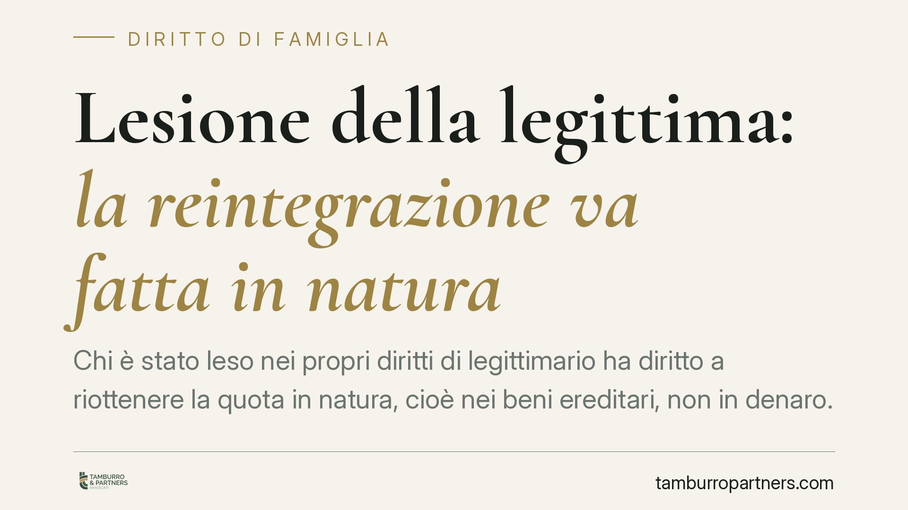

Lesione della legittima: la reintegrazione va fatta in natura
Chi è stato leso nei propri diritti di legittimario ha diritto a riottenere la quota in natura, cioè nei beni ereditari, non in denaro. La conversione forzata non è ammessa senza il consenso di tutti i coeredi. Un principio che incide sulla strategia dell'azione di riduzione e sulla gestione delle donazioni che eccedono la quota disponibile.

Il principio
La reintegrazione della quota di legittima lesa deve avvenire, di regola, in natura: il legittimario pretermesso o leso ha diritto a ottenere una porzione dei beni che compongono l'asse ereditario, non il loro controvalore in denaro.
La conversione in denaro non può essere imposta unilateralmente. È possibile solo se vi è accordo tra i coeredi oppure nei casi espressamente previsti dalla legge. È un orientamento consolidato della giurisprudenza di legittimità, coerente con la struttura dell'azione di riduzione.
*(Si fa riferimento all'orientamento giurisprudenziale consolidato della Corte di Cassazione. In assenza degli estremi esatti della pronuncia, il principio è qui trattato come indirizzo interpretativo stabile e non come commento a un singolo caso.)*
Inquadramento normativo
La materia non si esaurisce in un'unica norma. Il quadro di riferimento è dato dagli artt. 553-564 del Codice civile.
L'art. 553 c.c. disciplina la riduzione delle quote dei coeredi legittimi quando concorrono con legittimari. L'art. 554 c.c. stabilisce la riduzione delle disposizioni testamentarie che eccedono la quota di cui il testatore poteva disporre. L'art. 560 c.c. regola specificamente la riduzione dei beni immobili, ponendo la regola della separazione della porzione in natura quando l'immobile è comodamente divisibile. L'art. 561 c.c. prevede che gli immobili restituiti per effetto della riduzione tornino all'eredità liberi da ogni peso o ipoteca di cui il donatario li abbia gravati.
Citare il solo art. 560 c.c. è dunque riduttivo: la restituzione in natura è l'esito di un sistema, non di una singola disposizione.
Chi sono i legittimari
La legge riserva una quota dell'eredità a determinati soggetti, i legittimari: il coniuge, i figli e, in mancanza di figli, gli ascendenti.
La quota non è fissa, perché dipende dal concorso tra categorie. Quando il coniuge concorre con i figli, le quote di riserva si ripartiscono secondo il numero dei figli. Quando il coniuge concorre con gli ascendenti (in assenza di figli), a ciascuno spetta una quota distinta. La porzione effettivamente spettante va quindi calcolata caso per caso.
L'azione di riduzione e i termini
Lo strumento per far valere la lesione è l'azione di riduzione. Con essa il legittimario chiede che le disposizioni testamentarie e le donazioni lesive siano ridotte nei limiti necessari a reintegrare la sua quota.
L'azione è soggetta al termine di prescrizione decennale. Resta dibattuto il momento da cui il termine inizia a decorrere (*dies a quo*): secondo un orientamento dalla data di apertura della successione; secondo un altro, dalla data di accettazione dell'eredità da parte del chiamato. Sul punto permane un contrasto giurisprudenziale che consiglia prudenza e verifica caso per caso.
Implicazioni pratiche
Per il legittimario leso. Il diritto a ottenere la quota in natura rafforza la sua posizione: può pretendere beni determinati, compresi gli immobili, e non deve accontentarsi di una liquidazione in denaro imposta dagli altri coeredi. Occorre però individuare con precisione i beni oggetto di riduzione e valutarne la divisibilità.
Per il beneficiario di donazione eccedente. Chi ha ricevuto in vita una donazione che intacca la legittima altrui è esposto alla restituzione del bene. Se si tratta di un immobile, l'art. 561 c.c. impone la restituzione libero da pesi e ipoteche: un dato rilevante per chi, nel frattempo, abbia costituito garanzie sul bene o lo abbia utilizzato come leva per finanziamenti.
Cosa fare in concreto
- Verificate la composizione dell'asse ereditario e le donazioni effettuate in vita dal defunto, per stimare l'eventuale lesione.
- Calcolate la quota disponibile e le quote di riserva in base all'effettivo concorso tra legittimari.
- Agite entro il termine di prescrizione, monitorando con attenzione il *dies a quo* applicabile alla vostra situazione.
- Documentate l'esistenza di pesi o ipoteche sugli immobili donati, perché incidono sulla restituzione.
- Valutate la praticabilità di un accordo con i coeredi prima del contenzioso, quando la soluzione in denaro risulti più conveniente.
Disclaimer
Contributo informativo a cura di Tamburro & Partners - Avv. Giuseppe Tamburro. Non costituisce parere legale.
Ogni famiglia ha il suo equilibrio.
Separazione, divorzio, affidamento, assegno: se vuoi un confronto riservato su una specifica situazione, scrivi allo studio. Ti rispondiamo entro un giorno lavorativo.